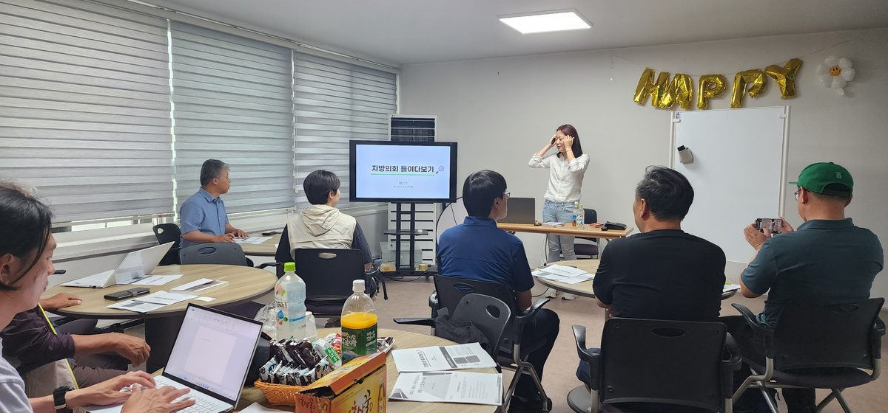
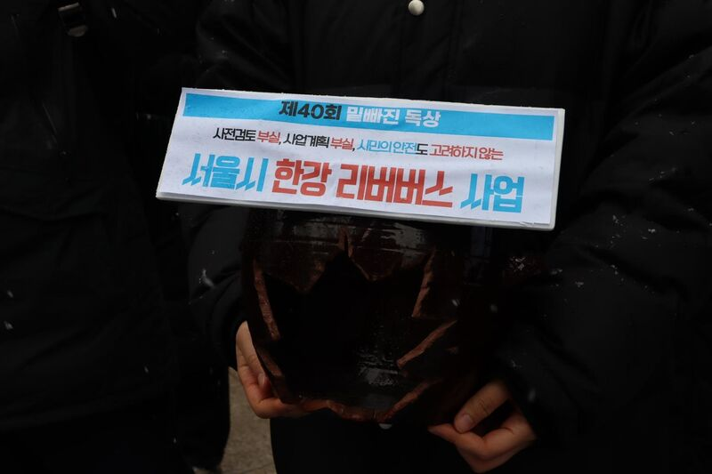
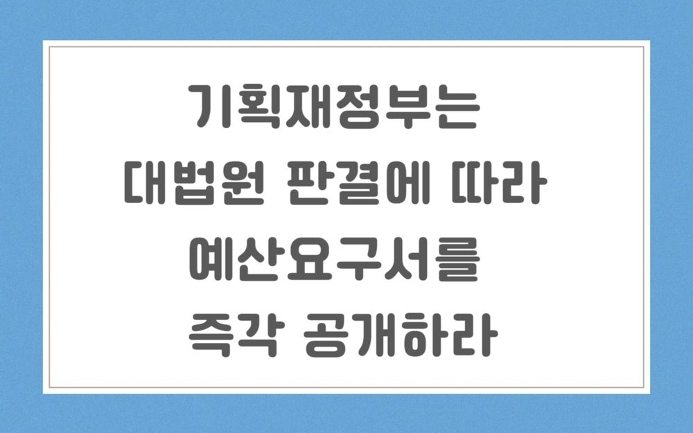
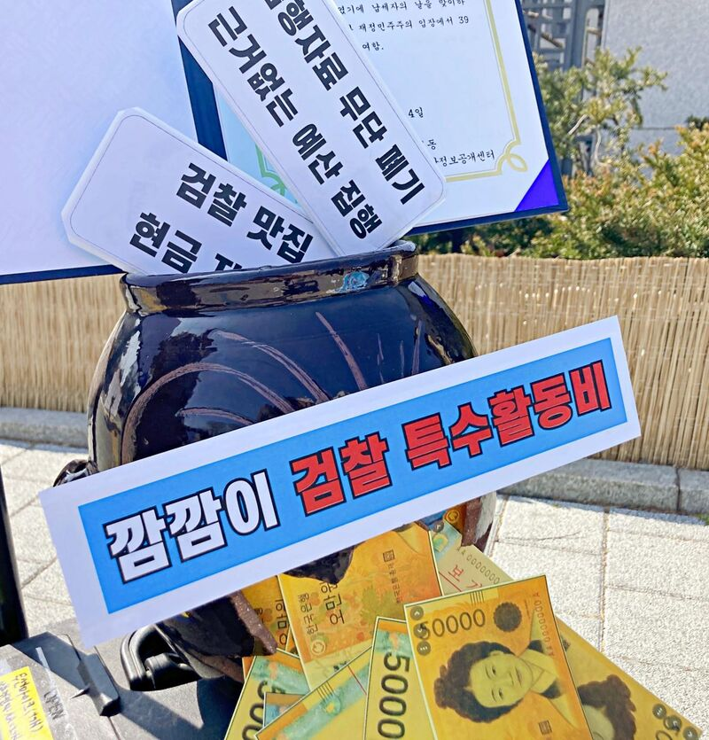
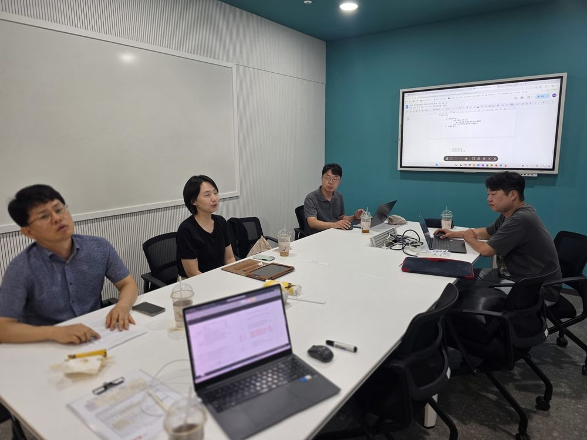
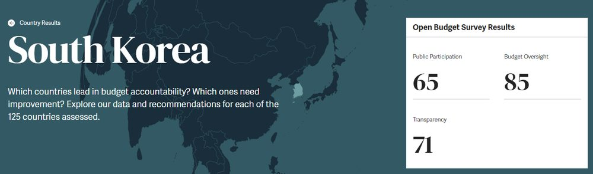

함께하는 시민행동은 1999년부터 정부와 공공기관의 예산낭비를 찾아 기록하고, 바로잡아온 시민단체입니다. 뿐만 아니라 기업 감시와 정보인권을 위해 활동해왔습니다. 시민행동은 정부·기업의 지원 없이 오직 시민의 후원으로 움직입니다.
"취업도 어렵고 어떻게 살아야 할지 모르겠어. 국가가 날 어떻게 보호하고 있는지, 이런 정책 구조를 쉽게 알려주는 곳 없나?"
"세금은 이렇게 많이 가져가는데 나에 대한 혜택은 부족한 것 같아. 국가가 예산을 잘못 쓰고 있는 거 아니야?"
"AI 시대에 반도체 덕에 초과세수가 많다던데, 그 돈을 어떻게 써야 맞는 걸까?"
"지방정부는 왜 이리 불필요한 행사와 개발사업을 벌이는 거지? 이걸 누가 정리해줄 순 없나?"
"우리 동네에 꼭 필요한 시설을 주민이 제안할 수 있는 참여예산 제도가 있다던데, 쉽게 알려줄 곳 없나?"
"곧 은퇴하는데 노후가 걱정돼. 국민연금이 개편된다던데 잘 되고 있는 거야?"
시민행동은 시민의 물음에 함께 고민하며 답과 다음을 준비해왔습니다.

국가 권력은 시민이 만들고, 시민행동은 권력을 시민의 눈으로 감시합니다.
당신이 낸 세금이 제대로 쓰이는지 찾아내고 기록합니다.
누구나 예산 편성에 참여할 있으며, 시민행동은 참여예산 교육과 제도 개선에 힘 써왔습니다.

부실한 타당성 조사, 실패한 유사 사업의 반복. 정식 운행 열흘 만에 중단된 한강버스 사업을 추적했습니다.
자세히 보기 →
기획재정부를 상대로 한 행정소송에서 최종 승소. 각 부처의 예산요구서가 시민에게 공개되는 첫 판결을 이끌어냈습니다.
자세히 보기 →
시민사회가 어렵게 삭감시킨 검찰 특수활동비가 2026년 예산안에 부활했습니다. 규탄 기자회견과 공수처 수사의뢰로 대응 했습니다.
자세히 보기 →
행안부 평가에서 185개 지자체가 미흡 판정을 받았지만 평가지표는 오히려 축소됐습니다. 시민행동은 전국 운영 현황을 모니터링합니다.
자세히 보기 →
함께하는 시민행동은 2016년부터 2023년까지 중앙정부에 대한 예산투명성을 평가하고 국가간 비교를 통해 우리나라는 어느 정도의 위치에 놓여있는지, 무엇이 개선되어야 하는지를 확인하고 발표하였습니다.
자세히 보기 → 지역 감시지방소멸대응기금이 본래 취지와 달리 개발사업에 쓰이고 사례를 추척해, 지역 주민, 회원과 함께 현장에서 검증했습니다.
자세히 보기 →최신 소식 — 카드를 옆으로 넘겨보세요.
함께하는 시민행동은 인종과 성, 국적, 연령, 직업, 장애를 이유로 차별받지 아니하며, 빈곤과 위험으로부터 자유롭고, 생태적으로 지속가능한 공동체를 만들겠습니다.
함께하는 시민행동은 '시민의 힘'을 믿습니다. 시민에게 친숙한 시민운동문화를 만들겠습니다. 접근하기 어렵고 참여하기 어려운 시민운동이 아닌, 누구나 참여할 수 있는 생활 속의 시민운동을 만들겠습니다.
가벼운 것부터 시작해도 좋습니다. 어떤 참여든 시민행동에는 힘이 됩니다.
30초면 됩니다. 이 페이지를 주변에 공유해 주세요.
시민행동의 모든 활동이 시민의 후원으로 이루어집니다.
해지는 전화 한 통이면 됩니다. 사유를 묻지 않습니다.
신청 페이지에서 CMS 자동이체·신용카드 결제를 선택할 수 있습니다.
지정기부금 단체 · 연말정산 세액공제 대상